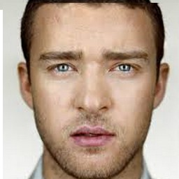

OVERVIEW
This project involves playing around with the frequency domain and blending images with multiresolution and gradient techniques
PART 1 FREQUENCY DOMAIN
PART 1.1 Image Sharpening
The original image is sharpened by substracting it self form its Gaussian filtered version at different k levels
k = 0
k = 2
k = 4
k = 6
k = 8
k = 10
PART 1.2 Hybrid Images
The illusion is created by putting a high frequency version (Laplacian filtered) of an image on top of a low frequency version (Gaussian filtered) of another image.
Derek and Nutmeg
Source image: Derek

Original Fourier Transform
Lowpass Fourier Transform
Source image: Nutmeg

Original Fourier Transform
Highpass Fourier Transform
Blended Megrek
Prince and Michael
Source image: Michael
Original Fourier Transform
Lowpass Fourier Transform
Source image: Prince
Original Fourier Transform
Highpass Fourier Transform
Blended Prichael
Trump and Hillary (FAILURE)
I couldn't find a good combination of the levels for the filters so that I can create a good blending these two pictures. May be they can't never be friends again after the election.
Source image: Hillary

Original Fourier Transform
Highpass Fourier Transform
Source image: Trump
Original Fourier Transform
Lowpass Fourier Transform
Blended Trumpillary
PART 1.3 Gaussian and Laplacian Stacks
All the pictures below are achieved by applying Gaussian and Laplacian filters at different levels in stacks and saving the images at each level.
Mona Lisa
Leonardo da Vinci is most famous for his multi-layer painting technique which he applied in the painting Mona Lisa. This part will demystify the secret why it seems like she's only smiling at some certain angles by filtering out the low and high frequencies at different levels.
Gaussian Stack, level = 0
Gaussian Stack, level = 1
Gaussian Stack, level = 2
kGaussian Stack, level = 3
kGaussian Stack, level = 4
Laplacian Stack, level = 0
Laplacian Stack, level = 1

Laplacian Stack, level = 2
Laplacian Stack, level = 3
Laplacian Stack, level = 4
Lincoln and Gala
The same thing happens here when we can see Lincoln clearer at low frequency and Dali sharper at high frequency.
Gaussian Stack, level = 0
Gaussian Stack, level = 1
Gaussian Stack, level = 2
Gaussian Stack, level = 3
Gaussian Stack, level = 4
Laplacian Stack, level = 0
Laplacian Stack, level = 1
Laplacian Stack, level = 2
Laplacian Stack, level = 3
Laplacian Stack, level = 4
Reblend Derek and Nutmeg with stacks of level 3

PART 1.4 Multiresolution Blending
Multiresolution blending computes a gentle seam between the two images seperately at each band of image frequencies, resulting in a much smoother seam.
Mask
Orapple
Source image: Apple
Source image: Orange
Result
Princhael
Source image: Prince
Source image: Michael
Result
Justit
Source image: Justin
Source image: Brad Pitt

Result
PART 2 GRADIENT DOMAIN FUSHION
PART 2.1 Toy Problem
This part will explore how a picture can be broken down and rebuilt with its gradients.
Source image: Toy Story

Reconstruced image
PART 2.2 Poisson Blending
This part will explore gradient-domain processing by using Poisson technique to blend two different images seemlessly to each other.
The Uninvited
Source image: Avengers

Source image: Yoda

Rude Pasting
Result B&W
Result Color

Avengers' New Member
Source image: Avengers

Source image: Yoda
Rude Pasting
Result B&W
Result Color
Failed Case
This happened because the source image is so small and I didn't leave enough margin in the mask so the it was dimmed in the blending process